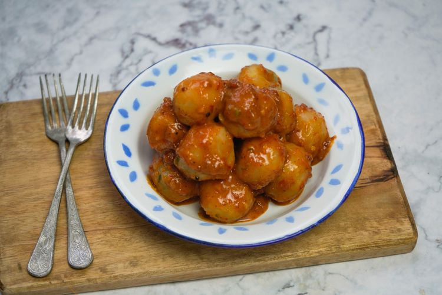

Latar Belakang

Cilok adalah makanan tradisional khas sunda, yang terbuat dari bahan dasar Aci (tepung tapioka) yang diolah dengan cara direbus setelah sebelumnya dibentuk bulat-bulat kecil seperti bakso, lalu disajikan dengan bumbu kacang kental yg menggoda. Tidak diketahui kapan Cilok ini hadir ditengah masyarakat tapi seiring waktu, popularitas Cilok tidak pernah surut dari khasanah kuliner orang sunda walaupun digempur oleh berbagai jenis makanan ringan kreasi baru yg terus bermunculan.
Dengan kondisi tersebut maka jumlah penjual cilok pun dari waktu kewaktu terus bertambah dan tidak hanya di daerah jawabarat tapi hampir diseluruh pelosok nusantara banyak bermunculan tukang cilok baru yang ikut meramaikan khasanah percilokan di tanah air. Berdasarkan hal tersebut maka muncul ide untuk menyatukan seluruh penjual cilok dinusantara ini dan lahirlah PETUCINI (Persatuan Tukang Cilok Nasional Indonesia.
Visi Misi
Visi dari PETUCINI adalah :
- menjaga Kedaulatan Cilok sebagai makanan khas tradisional Indonesia dari rongrongan bangsa asing yg ingin mengambil alih keberadaan cilok sebagai makanan khas negara mereka.
- Menjaga Eksistensi Cilok dari gempuran makanan-makanan populer yg berasal dari luar negeri yg bisa mengancam keberadaan cilok saat ini
Misi PETUCINI adalah :
- Meningkatkan kesejahteraan para tukang cilok, sehingga profesi tukang cilok menjadi profesi bergengsi di Indonesia
- Meningkatkan daya Saing menuju era 4.0 dan daya jangkau tukang cilok dengan Mengembangkan Aplikasi C-LOL, yaitu Aplikasi Cilok OnLine
- Membangun Lembaga Riset untuk mengembangkan varian Cilok, supaya Cilok terus Update mengikuti perkembangan jaman
Jadwal Kegiatan
Pelatihan Produksi Cilok Standar SNI
| Tanggal |
: |
29 Feb 2024 |
| Waktu |
: |
13.00 sd 20.00 |
| Lokasi |
: |
Gedung Pelatihan Petucini |
Seminar “Membuka Peluang ditengah persaingan Global”
| Tanggal |
: |
30 Juni 2024 |
| Waktu |
: |
10.00 sd 18.00 |
| Lokasi |
: |
Gedung Serbaguna Petucini |